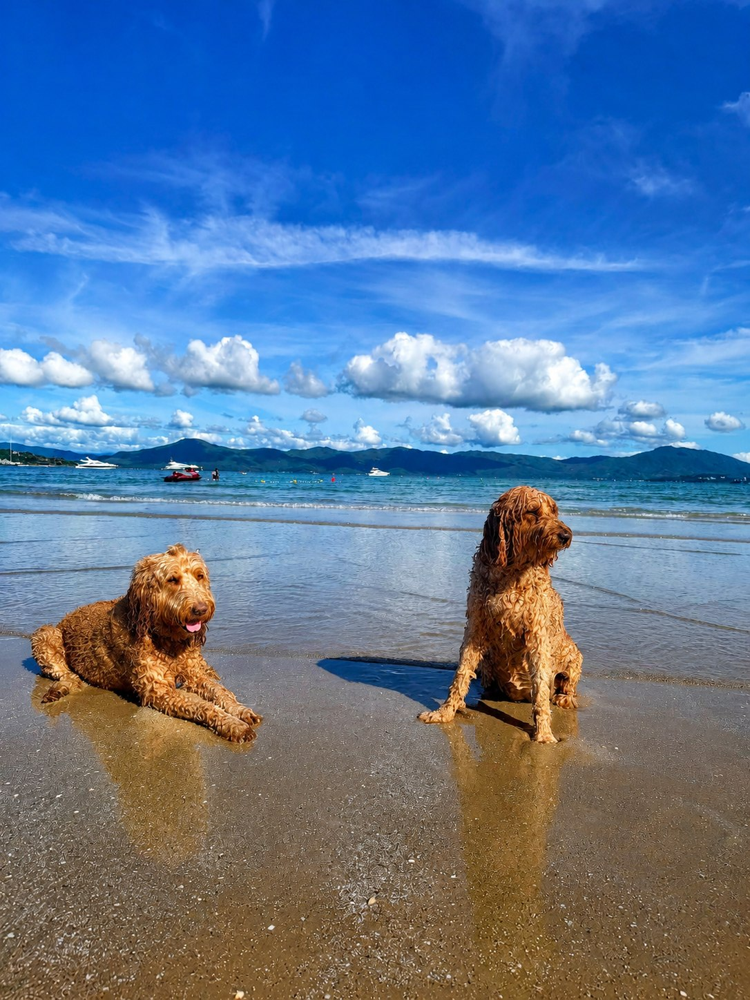

← Back to Revive & Glow
Gentle support for the dogs you love.
Veterinarian-guided red light therapy designed to support your dog’s comfort, mobility, and recovery in a calm, welcoming setting.

Veterinarian-guided red light therapy designed to support your dog’s comfort, mobility, and recovery in a calm, welcoming setting.
Red Light Therapy for Dogs
Red and near-infrared light offer a gentle, non-invasive experience that can complement your dog’s regular veterinary care.
May help support dogs experiencing arthritis, joint discomfort, hip dysplasia, or age-related stiffness.
May support recovery following ACL/CCL care, muscle strains, or other veterinarian-managed treatment plans.
A quiet, low-stress session designed with the comfort of older dogs in mind.

So your best friend can feel their best — and keep enjoying everything they love.
Before the First Session
Before any session at Revive & Glow, your dog must complete an initial consultation and evaluation with Dr. Aimee Burke at Fur Ever Friends Veterinary Clinic. This consultation is not held at Revive & Glow.
After Dr. Burke provides the written referral, send it to our team along with your pet’s information and signed owner forms. Once those documents are received and reviewed, Revive & Glow will arrange your dog’s first session.
Fur Ever Friends Veterinary Clinic
2525 Pasadena Ave South, Suite S
South Pasadena, FL 33707
(727) 288-4900
What to Expect
Your dog’s veterinary evaluation comes first. Revive & Glow schedules sessions only after receiving the referral and required forms.
Schedule the initial consultation at Fur Ever Friends Veterinary Clinic by calling (727) 288-4900.
Provide Revive & Glow with Dr. Burke’s written referral, your pet’s information, and the signed owner forms.
After the documents are reviewed, our team will contact you to arrange a calm, 20-minute session following the veterinarian-guided plan.
Pet Sessions & Packages
Choose individual pet sessions or enjoy recovery time together after veterinary referral and document review.
$39
$59 for both
$149/month
Good to Know
Yes. The experience is designed to feel calm and supportive, and the Heal Together package lets you recover side by side.
At Fur Ever Friends Veterinary Clinic — not at Revive & Glow. Call Dr. Aimee Burke’s clinic at (727) 288-4900. After the written referral and signed forms are received, our team will arrange the first session at Revive & Glow.
We reserve 20 minutes for each appointment, including positioning and a calm transition in and out. Light exposure is individualized and may be shorter based on your dog’s size, coat, treatment area, distance from the panel, comfort, and veterinarian-guided plan.
No. Our red light therapy supports your dog’s comfort and recovery and works alongside regular veterinary care.
Provided under the guidance of a licensed veterinarian. Red light therapy supports your dog’s comfort and recovery alongside — not in place of — regular veterinary care.
Begin With Veterinary Guidance
Call the veterinary clinic for the required consultation. After Revive & Glow receives the written referral and signed owner forms, our team will contact you to schedule the first session.
Call (727) 288-4900